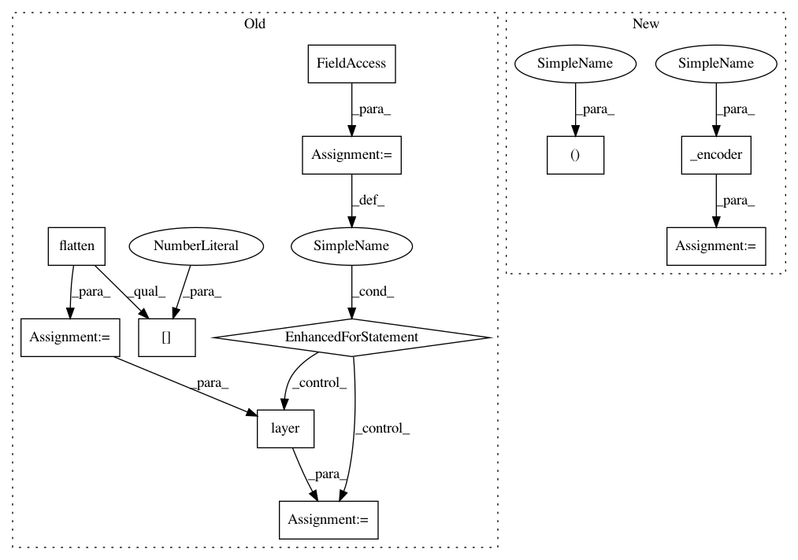

ed172723345439f2636f2c8b5ed6634dfdb4cfb8,tf_agents/networks/value_network.py,ValueNetwork,call,#ValueNetwork#Any#Any#Any#,103
Before Change
self.input_tensor_spec)
batch_squash = utils.BatchSquash(outer_rank)
states = tf.cast(tf.nest.flatten(observation)[0], tf.float32)
states = batch_squash.flatten(states)
for layer in self._postprocessing_layers:
states = layer(states)
value = tf.reshape(states, [-1])
value = batch_squash.unflatten(value)
return value, network_state
After Change
minval=-0.03, maxval=0.03))
def call(self, observation, step_type=None, network_state=()):
state, network_state = self._encoder(
observation, step_type=step_type, network_state=network_state)
value = self._postprocessing_layers(state)
return tf.squeeze(value, -1), network_state
In pattern: SUPERPATTERN
Frequency: 3
Non-data size: 11
Instances
Project Name: tensorflow/agents
Commit Name: ed172723345439f2636f2c8b5ed6634dfdb4cfb8
Time: 2019-07-24
Author: no-reply@google.com
File Name: tf_agents/networks/value_network.py
Class Name: ValueNetwork
Method Name: call
Project Name: tensorflow/agents
Commit Name: ed172723345439f2636f2c8b5ed6634dfdb4cfb8
Time: 2019-07-24
Author: no-reply@google.com
File Name: tf_agents/networks/value_network.py
Class Name: ValueNetwork
Method Name: call
Project Name: tensorflow/agents
Commit Name: 971f6abce45c412a860e6ea1b16c2d441ec28f5e
Time: 2018-11-14
Author: oars@google.com
File Name: tf_agents/networks/q_network.py
Class Name: QNetwork
Method Name: call
Project Name: tensorflow/agents
Commit Name: 6c2109a49c3ed9560bee9d95f88e17a0b62f180e
Time: 2019-07-24
Author: no-reply@google.com
File Name: tf_agents/networks/actor_distribution_network.py
Class Name: ActorDistributionNetwork
Method Name: call